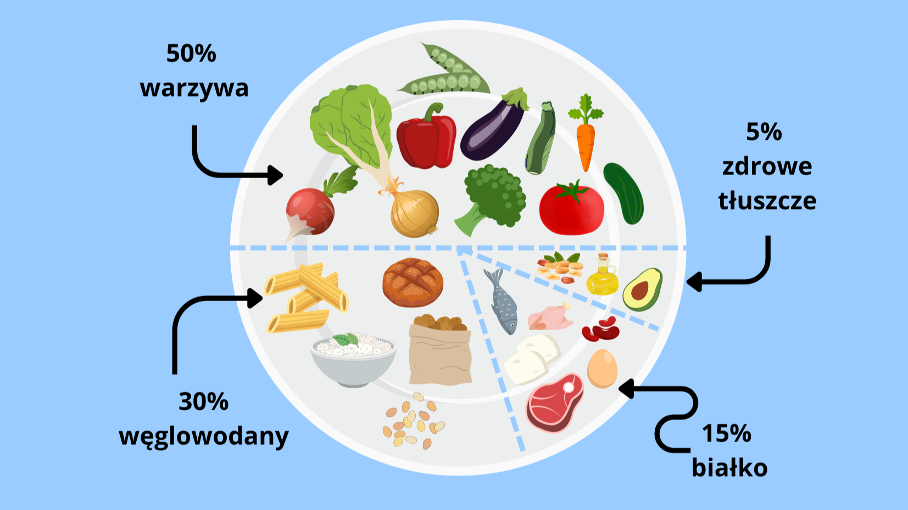

Leczenie insulinooporności: Jak złagodzić stan i utrzymać go pod kontrolą
Insulinooporność to stan metaboliczny, a nie choroba dlatego niekoniecznie możemy mówić o jej „wyleczeniu”, a o jej złagodzeniu. Istnieją przypadki pacjentów którzy „wyszli z insulinooporności” co znaczy że ich komórki znów uwrażliwiły się na insulinę, a trzustka pracuje odpowiednio. Należy jednak pamiętać, że to nie daje przyzwolenia na powrót do starych nawyków, gdyż nieodpowiednia dieta oraz brak ruchu mogą przyczynić się do ponownej insulinooporności. Dlatego przy IO tak bardzo ważna jest zmiana stylu życia, redukcja masy ciała jeśli jest ona nieprawidłowa, ograniczenie spożywania produktów wysoko przetworzonych i wprowadzenie regularnej aktywności fizycznej.
Dieta jako klucz do kontroli insulinooporności
Najważniejszym aspektem w wyciszaniu insulinooporności jest sposób odżywiania, który bezpośrednio wpływa na poziom glukozy i insuliny we krwi. Pierwszym hasłem, z którym należy się zaznajomić jest indeks glikemiczny, w skrócie IG. Jest to wskaźnik określany zazwyczaj w skali od 0 do 100, który mówi jak bardzo dany produkt powoduje wyrzut glukozy. Indeks 0 mówi, że dany produkt nie wpływa na poziom glukozy, do takich produktów należą np. mięso, ryby, jaja czy tłuszcze. Indeks 100 natomiast to czysty cukier, który powoduje ogromny wystrzał.
Dlaczego indeks glikemiczny jest ważny? Gdy dostarczamy organizmowi produkty o wysokim indeksie glikemicznym, oznacza to że poziom glukozy znacznie wzrasta, co za tym idzie organizm musi wytworzyć dużo insuliny do uregulowania tego poziomu. Jako że u osób z IO komórki stają się oporne na działanie insuliny, trzustka musi wyprodukować jej znacznie więcej niż u zdrowego człowieka.
No dobrze, ale skoro znam indeks glikemiczny produktów, to skąd mam wiedzieć czy posiłek z nich skomponowany jest dobry czy zły? Tu z odpowiedzią przychodzi ładunek glikemiczny, który jest wskaźnikiem mierzącym wpływ węglowodanów z posiłku na poziom cukru we krwi, a zatem uwzględnia on indeks glikemiczny produktu oraz ilość zawartych w nim węglowodanów. Zobaczmy to na przykładzie: jesz obiad który składa się z mięsa np. pierś z kurczaka, do tego ryż oraz sałatka na bazie rukoli z dresingiem z oliwy i łyżeczki miodu. W posiłku mamy pierś z kurczaka, rukolę oraz oliwę które mają niski indeks glikemiczny, oraz gotowany ryż oraz miód których indeks glikemiczny jest średni/wysoki. Jako że produkty o wysokim IG zostały podane w towarzystwie tych o niższym IG cały ładunek glikemiczny tego posiłku jest niższy. Dzięki temu możemy nadal cieszyć się produktami które lubimy, ale należy pamiętać aby były to mniejsze ilości i podane w odpowiednim towarzystwie a trzustka nam się odwdzięczy.
A zatem jak komponować posiłki, aby ich ładunek glikemiczny był niski? Przyda nam się do tego wizualizacja zdrowego talerzyka. Jakie proporcje przyjąć?
- Połowa talerza powinna być zajęta przez warzywa najlepiej takie surowe, ewentualnie ugotowane al dente. Należy unikać rozgotowywania warzyw oraz ich rozdrabniania, dlatego musy czy szejki nie są wskazane
- Jedna trzecia talerzato węglowodany najlepiej takie o niskim/średnim indeksie glikemicznym, np. makarony pełnoziarniste, ryż brązowy czy kasza gryczana
- Około 15% talerzamięso, ryby, nabiał czy rośliny strączkowe
- Około 5% talerzato zdrowe tłuszcze takie jak oliwa z oliwek, orzechy czy awokado.

Zasady komponowania zdrowego talerza
Ruch: Kluczowy element poprawy insulinowrażliwości
Jak już mamy ogarniętą dietę pora na kolejny aspekt, czyli ruch. Regularna aktywność fizyczna poprawia wrażliwość komórek na insulinę, dzięki temu organizm lepiej pożytkuje insulinę do przetwarzania glukozy.
Jaki sport zatem wybrać? Odpowiedź nie jest jednoznaczna, ale warto wziąć pod uwagę kilka aspektów. Pierwszy z nich to „taka jaką lubisz”, w IO najważniejsza jest regularność, a żeby aktywność odbywała się systematycznie nie może kojarzyć się z karą. Takie podejście prowadzi do szybkiego wypalenia i całkowitej rezygnacji z ruchu. Możesz zacząć od spacerów, jazdy na rowerze, jazdy na rolkach czy pływania. Każda forma aktywności pozytywnie wpływa na organizm.
A co z treningami siłowymi i interwałami? Badania pokazują że trening siłowy o średniej intensywności oraz intensywn treningi typu interwał to jedne z lepszych form dla osób z IO. Zwiększenie masy mięśniowej oraz redukcja tkanki tłuszczowej oznaczają lepszą wrażliwość komórek na insulinę. Dlatego tak rzadko słyszy się o sportowcach zmagających się z insulinoopornością.
Co jeśli dieta i ruch nie wystarczą? Pomocna może być farmakoterapia
W wielu przypadkach zmiana stylu życia, wprowadzenie aktywności fizycznej oraz regularne, zbilansowane posiłki o niskim ładunku glikemicznym pozwalają trzymać insulinooporność w ryzach. Niektórym takie zmiany przychodzą z ogromną trudnością, a rozregulowane hormony utrudniają wyrobienie dobrych nawyków lub też wyniki badań są na tyle niepokojące że trzeba natychmiast obniżyć poziom hormonów aby nie doprowadzić do nieodwracalnych zmian. W takich sytuacjach zalecana jest farmakoterapią, która po konsultacji dobiera lekarz.
Najpopularniejszym środkiem stosowanym w insulinooporności jest metformina, która wspomaga regulację poziomu glukozy i insuliny. Lek ten jest też często stosowany u osób chorujących na cukrzycę.
Chociaż farmakoterapia jest skuteczna, należy pamiętać że lek sam nie zrobi całej roboty i aby trzymać efekty konieczne jest jednoczesne stosowanie odpowiedniej diety.